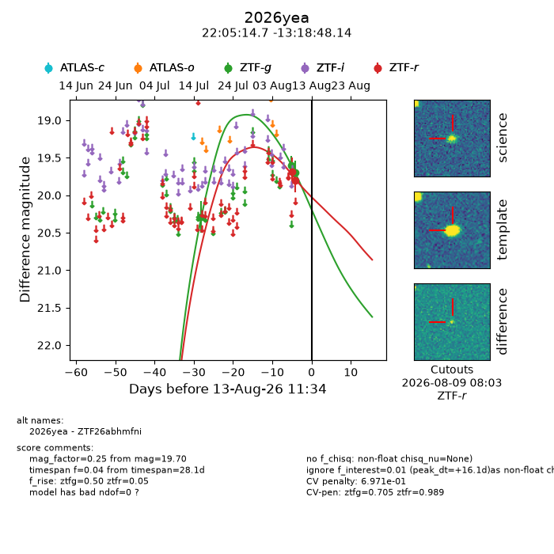
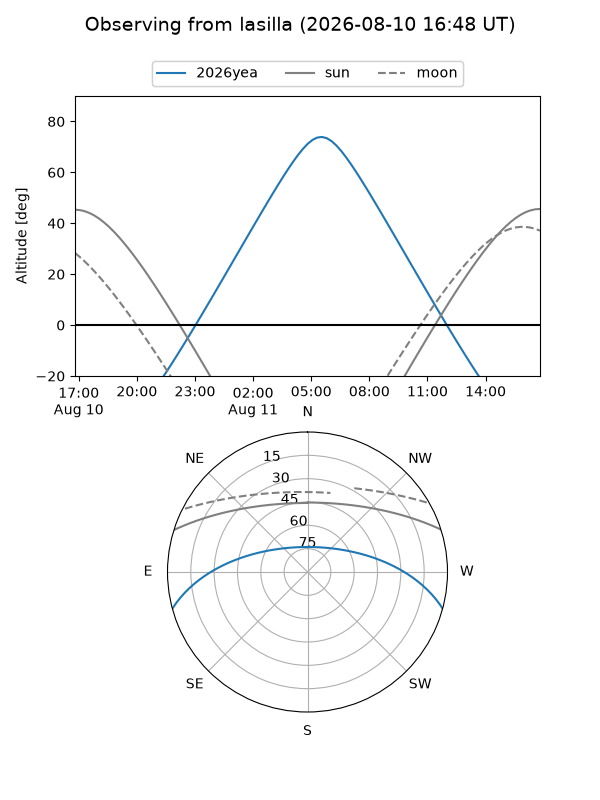
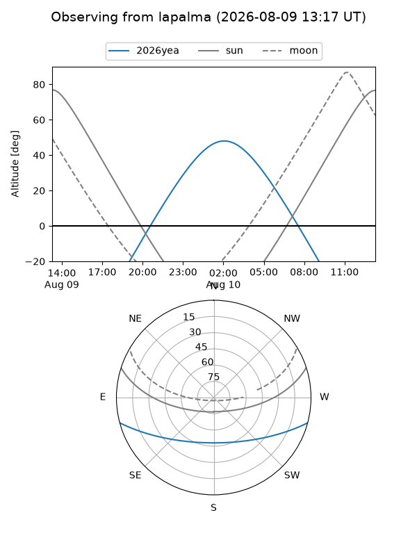
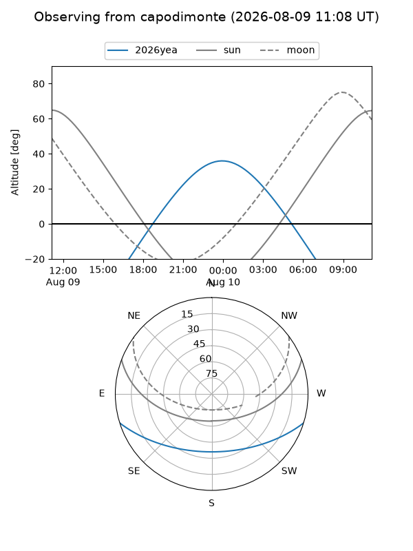
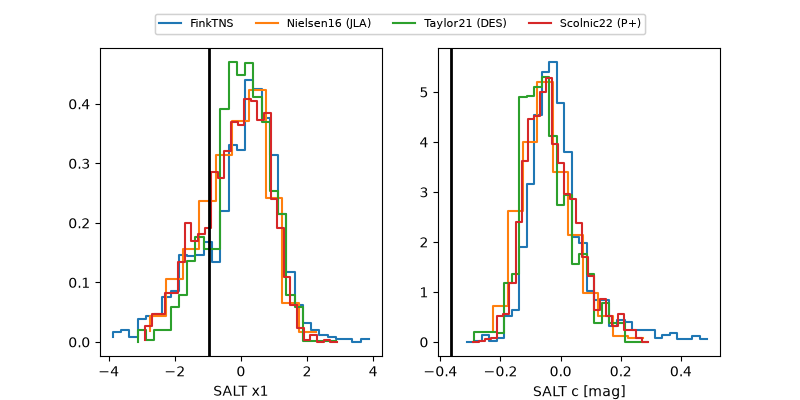

2026yea
Target 2026yea at 2026-08-13 11:37
Aliases and brokers:
FINK-ZTF: ztf.fink-portal.org/ZTF26abhmfni
Lasair-ZTF: lasair-ztf.lsst.ac.uk/objects/ZTF26abhmfni
ALeRCE-ZTF: alerce.online/object/ZTF26abhmfni
YSE-PZ: ziggy.ucolick.org/yse/transient_detail/2026yea
TNS name: wis-tns.org/object/2026yea
Direct TNS query: direct search
alt names
ZTF26abhmfni (ztf,fink_ztf)
2026yea (tns,yse)
Coordinates:
equatorial (ra, dec) = 331.3111,-13.31337
equatorial (HMS+DMS) = 22:05:14.66,-13:18:48.14
galactic (l, b) = (44.0758,-48.86535)
Flags:
TNS type: nan
peak dt: +16.1
likely cv: !!
Photometry:
last ztfg=19.70, ztfr=19.81
3 ztfg, 2 ztfr detections
Lightcurve

Visibility



Additional plots
